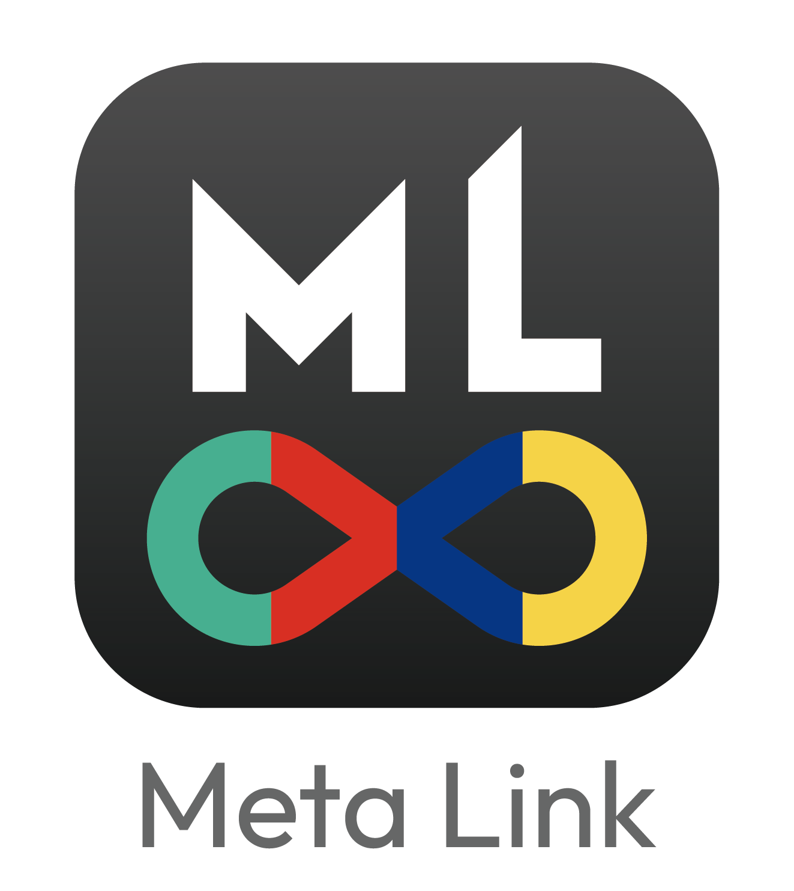

問題與場域可行性分析
釐清使用情境、資料條件與導入需求。
ABOUT ROBUST
羅伯斯特有限公司由具備影像辨識、演算法、資料分析與軟硬體整合經驗的成員共同創立。團隊起源於 2018 年人工智慧學校技術領袖班的合作，並於 2020 年 9 月成立公司，持續投入 AI 應用開發與場域整合。
我們重視問題本身與使用情境，從資料條件、技術可行性與實際操作需求出發，規劃適合的模型、演算法與系統架構。服務涵蓋電腦視覺、邊緣運算、嵌入式系統整合及客製化軟體開發。
OUR CAPABILITIES
釐清使用情境、資料條件與導入需求。
透過資料處理、標記、模型訓練與驗證，確認解題方向。
將 AI 模型與邊緣裝置、軟體介面及資料分析流程整合。
依需求提供 AI 應用諮詢、輔導與課程。
OUR TEAM
專長為影像處理、人工智慧應用與軟硬體整合，具自動化光學檢測、工業影像分析及軟體開發經驗，關注工業現場問題分析與解決。
具資訊工程與演算法背景，專長為 AI 模型開發、演算法設計與優化。
具電腦視覺、韌體及硬體相關開發經驗，專長為影像演算法、邊緣裝置演算法與系統整合。
GOVERNMENT PROGRAMS
2021 年及 2023 年獲桃園市地方型 SBIR 計畫補助，累積研發專案執行經驗。
2026 年與玖泰交通科技共同承接桃園市政府交通調查計畫，進行約 300 個路口的交通轉向量調查。
PARTNERS

麥塔智能MILESTONES / 2018–2026
羅伯斯特團隊自公司成立前即參與 AI 解題與應用競賽，領域涵蓋影像辨識、智慧製造、智慧家電與資料分析。以下依年度呈現代表成果。
START A CONVERSATION
需要交通影像分析、AI 影像識別或系統整合服務，歡迎提供專案背景、使用場域與預期成果，由專人與您聯繫。
交通專案洽詢建議提供：公司或單位名稱、聯絡方式、調查地點與路口數、預定時段、影像來源及需求成果。
洽詢交通分析專案